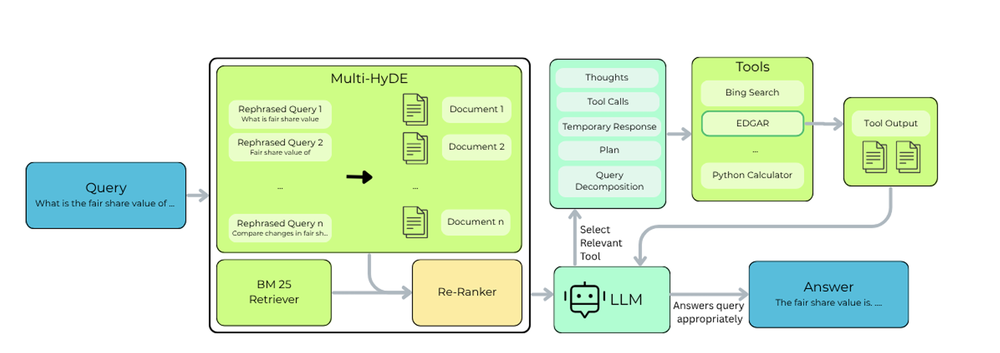

|
Rahul Vimalkanth I am a pre-final year undergraduate student in Electrical Engineering at IIT Madras. My research interests lie at the intersection of robotics, computer vision, and natural language processing. Currently, I am a Young Research Fellow (YRF) at IIT Madras, where I work on efficient vision models for industrial anomaly detection in collaboration with KLA Corporation, advised by Prof. Kaushik Mitra. I also work as a Research Associate at the Computational Imaging Lab on privacy-preserving computational imaging. I am working with Prof. Sourav Garg at the RRC, IIIT Hyderabad on robot learning for visual navigation and control. Previously, I worked on robot perception and dynamic scene understanding at the Robert Bosch Centre for Cyber-Physical Systems, IISc Bangalore, advised by Prof. Pradipta Biswas. |

|
ResearchI am broadly interested in building intelligent systems that can perceive, reason, and act reliably in the real world. My work spans robotics, computer vision, and natural language processing, with an emphasis on robustness, generalization, and efficient learning. |
|
 |
Enhancing Financial RAG with Agentic AI and Multi-HyDE: A Novel Approach to Knowledge Retrieval and Hallucination Reduction
A.G. Srinivasan, R.J. George, J.K. Joe, H. Kant, H. M R, S. Sundar, S. Suresh, Rahul Vimalkanth, Vijayavallabh EMNLP (10th Workshop on FinNLP), 2025 arXiv We propose a novel agentic RAG framework utilizing Multi-HyDE and state machines to significantly reduce hallucinations and improve the accuracy of knowledge retrieval in complex financial contexts. |
|
Website template from Jon Barron. |